Chapter 4. 유용한 선형회귀#
1. 선형회귀분석의 필요성#
작성자 : 박상호
예시 : 은행이 고객을 평가하고 신용 한도를 배정할 때 10개의 변수를 사용하고, 각 변수에 3개의 그룹이 있다. 셀의 개수는 이때, 총 \(3^{10}\) = 59,049개가 된다. 각 셀에서 ATE를 추정하고 각 결과의 평균값을 구하려면 엄청난 양의 데이터가 있어야 한다.
차원의 저주에서 벗어나기 위해 잠재적 결과를 선형회귀 같은 방식으로 모델링할 수 있다고 가정하고, X로 정의된 각각의 셀을 내삽(interpolate)하고 외삽(extrapolate)한다. 회귀분석은 필요한 모든 추론 통계량을 바로 얻을 수 있다.
예시 : 새로운 추천 시스템이 스트리밍 서비스의 시청 시간을 늘릴 수 있는지 알기 위해 A/B 테스트를 진행하였다.
\(WatchTime_i = \beta_0+\beta_1challenger_1+e_1\)
여기서 \(challenger\)는 새로운 추천 시스템이 적용되면 1, 그렇지 않으면 0이다. 이 모델을 추정하는 경우, 새로운 버전의 효과는 \(\beta_1\)의 추정값인 \(\widehat{\beta_1}\)이 된다.
\(\widehat{\beta_0}\)은 기존 버전의 추천 시스템을 사용했을 때의 추정값이고, \(\widehat{\beta_0}+\widehat{\beta_1}\)이 새로운 버전을 이용한 고객 시청 시간의 추정값이다. \(\widehat{\beta_1}\)이 ATE에 해당한다.
신용 한도가 채무불이행률에 미치는 영향을 추정하고자 선형회귀분석을 사용하는 상황을 고려해보자.
\(Default_i=\beta_0+\beta_1line_i+e_i\)
여기서 추정된 \(\widehat{\beta_1}\)은 신용 한도가 1달러 증가할 때 채무불이행률이 얼마나 변할지에 대한 기댓값이다. 그러나 은행은 위험이 적은 고객에게 더 높은 한도를 주는 경향이 있기 때문에, 교란 요인을 보정해야 한다. 회귀분석은 OLS로 추정할 모델에 단순히 교란 요인을 추가하면 교란 요인이 보정된다.
\(Default_i=\beta_0+\beta_1line_i+\theta X_i+e_i\)
여기서 \(X\)는 교란 요인의 벡터이고 \(\theta\)는 해당 교란 요인과 관련된 매개변수의 벡터이다. 몇 가지 교란 요인을 추가하면 신용 한도와 채무불이행률 사이의 관계가 양수로 바뀐다.
2. 회귀분석 이론#
\(\beta^*\)를 매개변수 벡터라고 하자.
\(\beta^*=argmin_\beta E[(Y_i-X_i^\prime\beta)^2]\)
선형회귀분석은 평균제곱오차를 최소화하는 매개변수를 찾는다. 이를 미분하고, 그 결과를 0으로 두면, 표본으로부터 다음과 같이 회귀계수를 추정할 수 있다.
\(\widehat{\beta}=(X\prime X)^{-1}X\prime Y\)
단순선형회귀
인과추론에서는 변수 T가 결과 Y에 미치는 인과효과를 추정하려는 경우가 많다. 단순선형회귀분석을 통해 이 효과를 추정할 수 있다.
\(\widehat\tau=\frac{Cov(Y_i,T_i)}{Var(T_i)}\)
회귀분석은 처치와 결과가 어떻게 함께 움직이는지(분자의 공분산) 파악하고 이를 처치 대상에 따라 조정(분모의 분산)한다.
다중선형회귀
설명변수가 두 개 이상일 때에는 단순선형회귀분석을 확장하면 된다. 관심 있는 것은 \(T\)와 관련된 매개변수 \(\tau\)를 추정하는 것이다.
\(y_i = \beta_0+\tau T_i+ \beta_1 X_{1i}+\cdots+\beta_k X_{ki}+u_i\)
여기서 \(\tau\)는 다음 공식으로 추정할 수 있다.
\(\hat\tau=\frac{Cov(Y_i,\tilde T_i)}{Var(\tilde T_i)}\)
여기서 \(\tilde T_i\)는 \(T_i\)를 모든 공변량 \(X_{1i}+\cdots+X_{ki}\)에 대해 회귀한 잔차(residual)이다. 다중회귀분석의 회귀계수는 모델의 다른 변수들의 효과를 고려한 후 얻은 값이다. 교란 요인에서 T를 예측한 다음, T에서 회귀한 값을 빼준다. \(\tilde T\)는 \(X\)의 다른 변수와 연관이 없는 처치이다.
3. 프리슈-워-로벨 정리와 직교화#
FWL 정리로부터 구한 결과와 다중회귀분석의 결과는 동일하다. 하지만 FWL의 경우 세 단계로 나누어 추정할 수 있고, 편향 제거와 잡음 제거한 데이터셋을 얻을 수 있다.
편향 제거 단계 : 처치 \(T\)를 교란 요인 \(X\)에 회귀하여 처치 잔차 \(\tilde T=T-\hat T\)를 구한다.
잡음 제거 단계 : 결과 \(Y\)를 교란 요인 \(X\)에 대해 회귀하여 결과 잔차 \(\tilde Y=Y-\hat Y\)를 구한다.
결과 모델 단계 : 결과 잔차 \(\tilde Y\)를 처치 잔차 \(\tilde T\)에 대해 회귀하여 \(T\)가 \(Y\)에 미치는 인과효과 추정값을 구한다.
원래 데이터셋
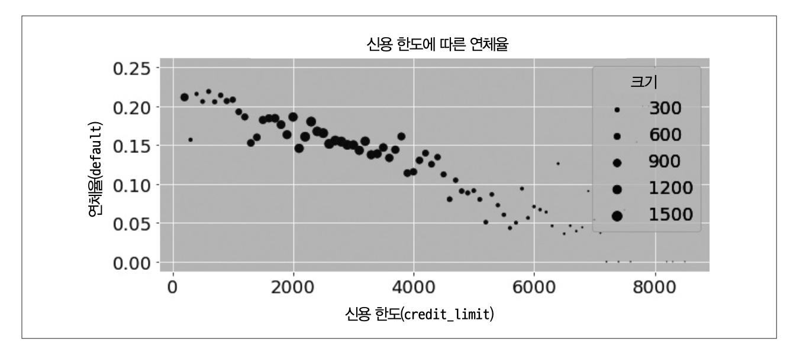
편향 제거 후 데이터셋 (다중회귀분석 \(\hat\beta_1\)의 추정량과 같으나 \(\hat\beta_1\)의 표준오차는 더 큼)
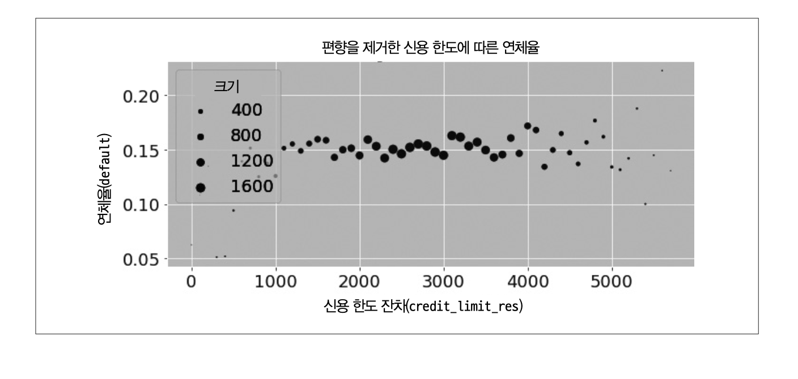
잡음 제거 후 최종 결과 모델 (다중회귀분석 \(\hat\beta_1\)의 추정량과 표준오차가 같음)
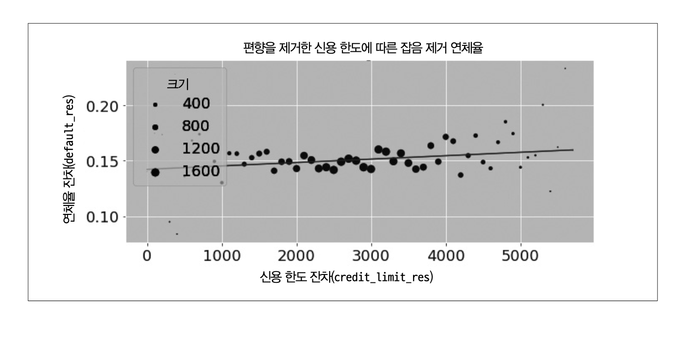
회귀 추정량의 표준오차
추정한 회귀계수의 표준오차의 공식은 다음과 같다.
\(SE(\hat\beta)=\frac{\sigma(\hat\epsilon)}{\sigma(\tilde T )\sqrt{n-DF}}\)
여기서 \(\hat\epsilon\)은 회귀 모델의 잔차이고 \(DF\)는 모델이 추정하는 매개변수의 수이다 (n-\(DF\)가 자유도, n은 관측 데이터 수).
분자의 경우 결과를 잘 예측할수록 잔차가 작아지므로 추정값의 분산이 낮아진다. 또한 처치가 결과를 많이 설명하면 매개변수 추정값의 표준오차도 작아진다. 오차는 (잔차화된) 처치의 분산에 반비례한다. 처치가 많이 바뀌면 그 영향을 측정하기가 더 쉬워진다.
FWL 정리 시각화 요약
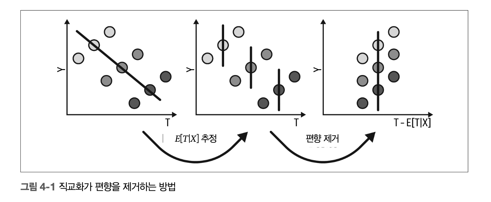
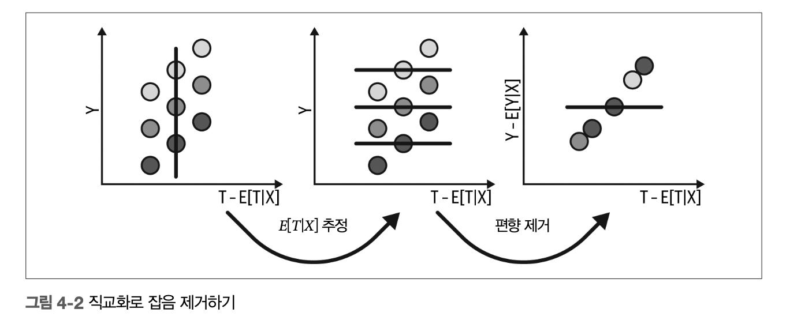
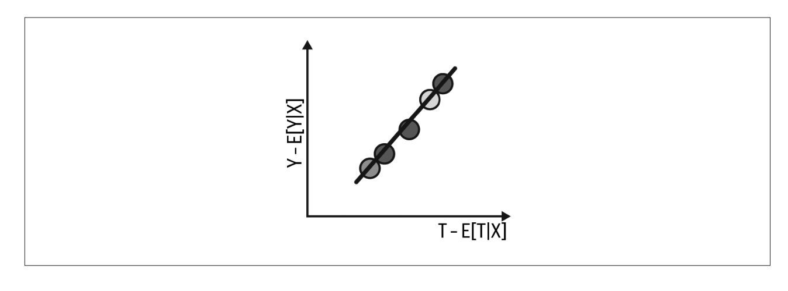
4. 양수성과 외삽#
외삽 주의
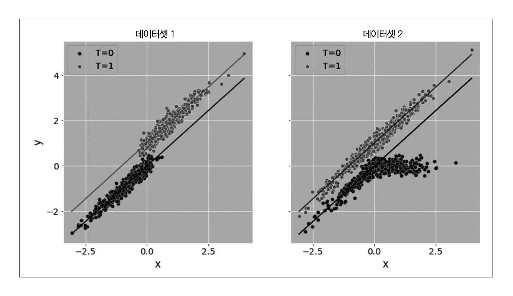
데이터셋 1은 실제 관측된 값이고, 데이터셋 2는 처치를 무작위 배정한 결과. 데이터셋 2에서는 실제 처치효과보다 크게 과소평가한 것을 확인할 수 있다.
5. 선형회귀에서의 비선형성#
예를 들어, 한도를 2,000에서 3,000으로 늘렸을 때보다 1,000에서 2,000으로 늘렸을 때 소비가 더 많이 증가하는 경우 어떻게 해야할까? 다음과 같은 데이터셋을 고려해보자.
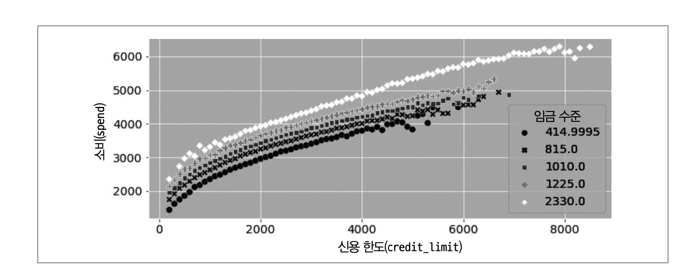
이 문제를 해결하기 위해 처치를 결과와 선형 관계로 변환해야 한다. 예를 들어, 다음과 같은 모델을 고려해볼 수 있다.
\(spend_i = \beta_0+\beta_1 \sqrt{line}_i+e_i\)
여기서 제곱근, 로그 함수, 분수의 거듭제곱 등 여러가지를 고려해볼 수 있다. 이 예제에서는 제곱근을 사용하였다.
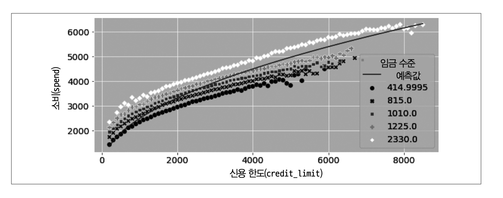
비선형 FWL과 편향제거
처치 선형화 단계: \(T\)와 \(Y\)의 관계를 선형화하는 함수 \(F\)를 찾는다.
편향 제거 단계: \(F(T)\)를 교란 요인 \(X\)에 회귀하고 처치 잔차 \(\widetilde {F(T)}=F(T)-\widehat {F(T)}\)를 구한다.
잡음 제거 단계: 결과 \(Y\)를 교란 요인 \(X\)에 대해 회귀하여 결과 잔차 \(\tilde Y=Y-\hat Y\)를 구한다.
결과 모델 단계: 이렇게 얻은 결과 모델은 결과 잔차 \(\tilde Y\)를 처치 잔차 \(\widetilde {F(T)}\)에 대해 회귀하여 \(F(T)\)가 \(Y\)에 미치는 인과효과 추정값을 구한다.
비선형 FWL을 한 결과
1)에서는 예측값이 상향 편향되어 있으나 여기서는 임금 그룹의 중간을 통과한다. 모델에 임금을 포함하였다.
\(spend_i=\beta_0+\beta_1 \sqrt{line}_1+\beta_2 wage_i+e_i\)
코드
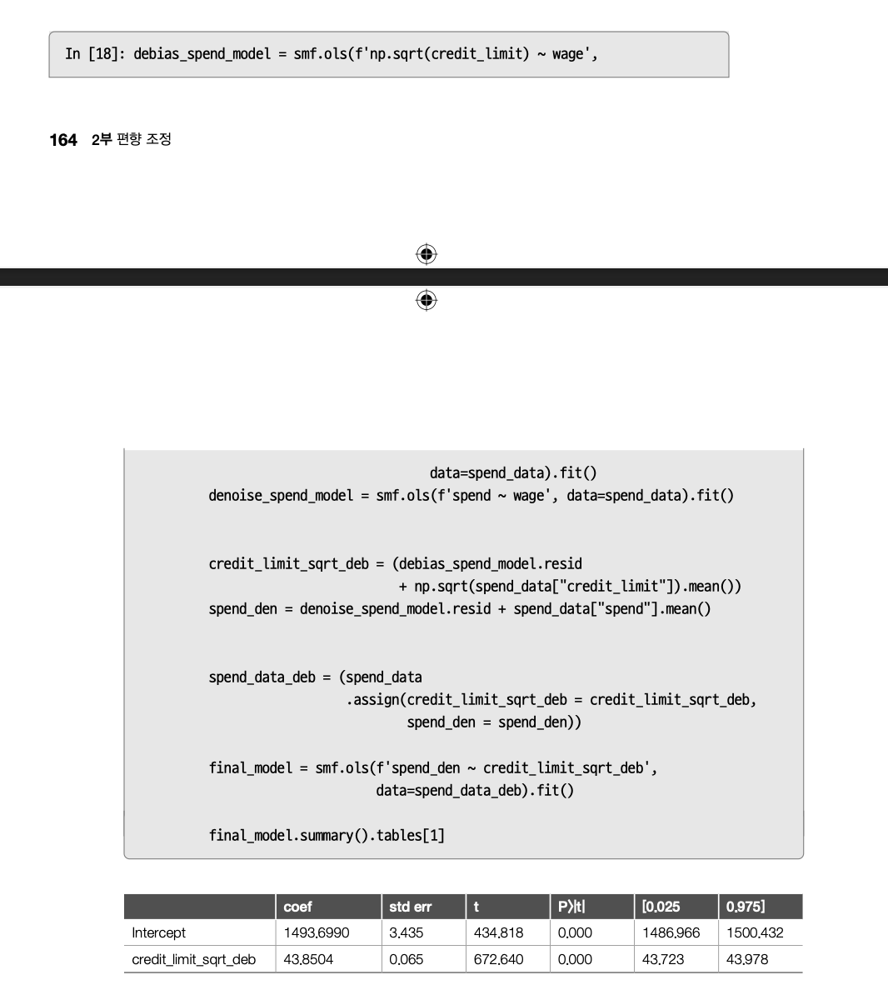
6. 더미변수#
은행에서 신용 한도를 무작위로 배정하여 채무불이행률과 고객 소비에 미치는 영향을 추정할 수 있으나, 큰 비용이 들 수 있다. 한 가지 해결 방법은 조건부 무작위 실험을 고려하는 것이다. 예를 들어, \(credit\_score1\) 변수가 고객 위험도의 대리변수라고 할 때, 위험도에 따른 고객 그룹을 생성할 수 있다. \(credit\_score1\)이 낮은 고위험 그룹은 평균이 낮은 분포에서 신용 한도를 추출하여 무작위로 배정하고, \(credit\_score1\)이 높은 저위험 고객은 평균이 높은 분포에서 추출하여 신용 한도를 무작위로 배정한다.
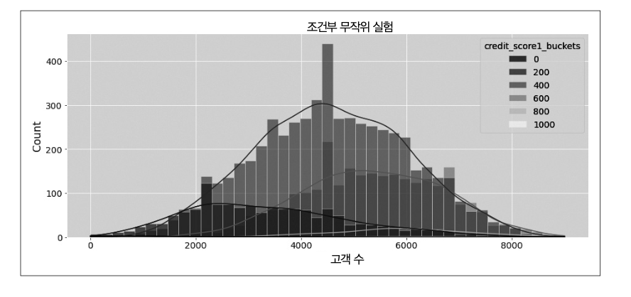
회귀모형에서 \(credit\_score1\)의 범주에 따라 다르게 추정하고 싶을 때 더미변수를 사용한다. 더미변수는 그룹에 대해 이진값으로 구성된 열이다. 즉, 고객이 해당 그룹에 속하면 1이고 그렇지 않으면 0이다. 고객은 하나의 그룹에만 속할 수 있으므로 더미 열 중에서 하나만 1의 값을 가질 수 있고, 나머지 열은 모두 0이 된다. 첫 번째 더미의 경우에는 제외한다(모든 열의 값이 0이기 때문이다).
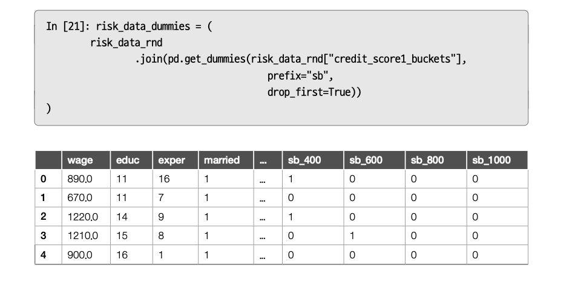
회귀 모델은 다음과 같다.
\(default_i=\beta_0+\beta_1 lines_i + \theta G_i + e_i\)
다음 표에서 sb_200, sb_400, …, sb_1000은 sb_000을 기준(reference)으로 각 군의 효과를 나타낸 것이다.
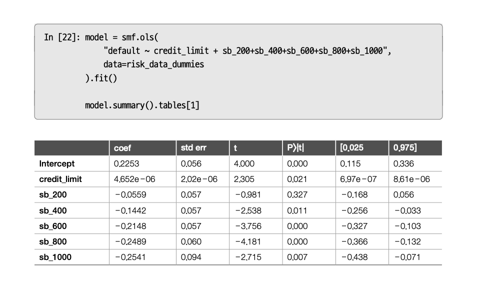
기울기 매개변수는 하나 뿐이고, 그룹당 하나의 절편이 생기지만, 모든 그룹에 동일한 기울기가 적용된다.
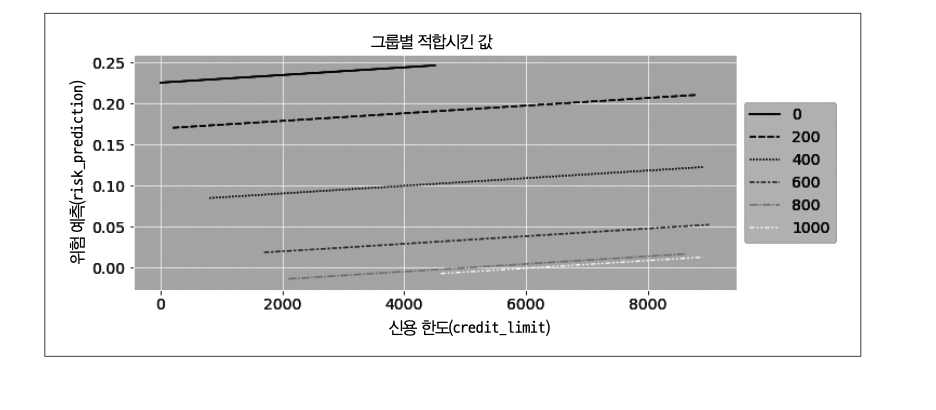
만약 그룹별로 효과가 다르다고 판단해서, 회귀분석을 진행하고 싶다면 포화모델을 고려해볼 수 있다. 조건부 무작위 실험의 데이터를 \(credit\_score1\_buckets\)에 따라 나누고 그룹별로 효과를 추정한 것과 같다.
각 그룹별로 효과를 추정한 경우
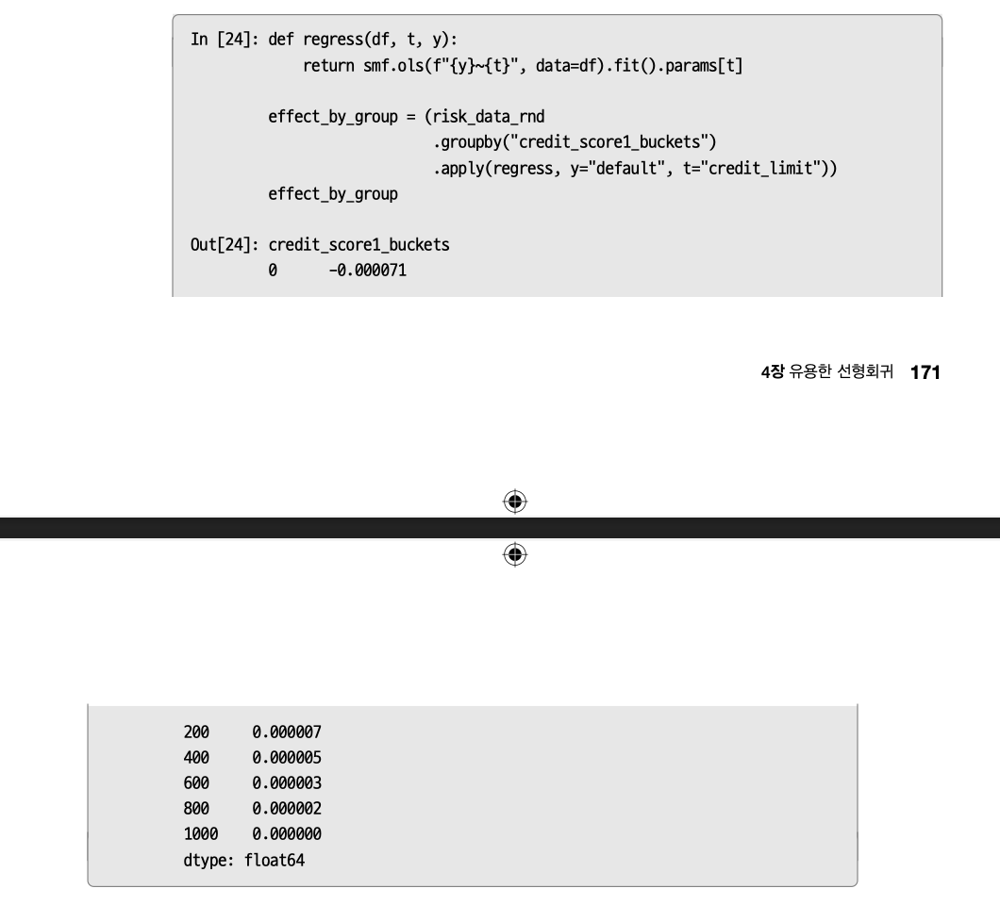
포화모델은 더미변수와 처치에 대한 상호작용 항에서, 각 더미변수에 해당하는 그룹의 인과효과를 추정할 수 있다.
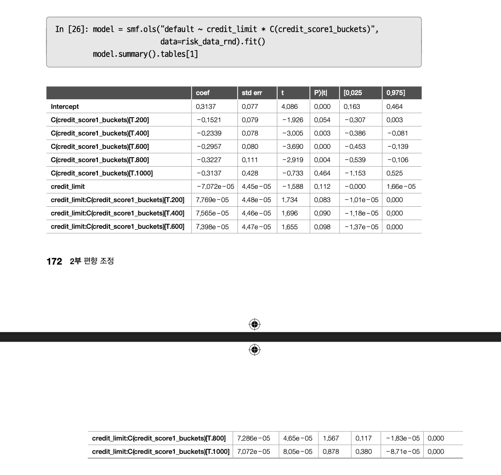
회귀분석 결과
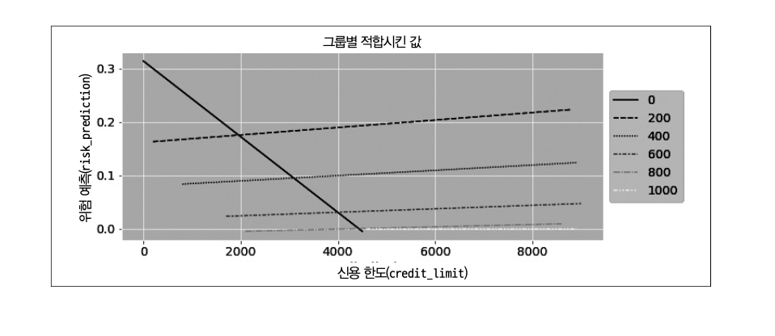
음의 기울기 그래프와 여러 기울기 그래프가 나타나는데, 위의 표를 보면 모든 기울기가 통계적으로 유의하지 않다. 군을 많이 나눠서 각 그룹의 표본 크기가 작아졌고, 표준오차가 크게 나타난 것으로 보인다.
회귀분석은 그룹 효과를 결합할 때 표본 크기를 가중치로 사용하는 것이 아니라 각 그룹에서 처치의 분산에 비례하는 가중치를 사용한다. 예시는 교재 참고.
\(ATE=E\biggl\{ \bigg(\frac{\partial}{\partial t}E[Y_i|T=t,Group_i]\bigg)w(Group_i)\biggl\}\)
회귀분석에서는 \(w(Group_i) \propto \sigma^2(T)\)를 사용한다.
7. 중립 통제변수#
회귀분석에서 고려해야 할 다른 유형의 통제변수가 있다. 일부 변수가 무해해 보이지만, 실제로는 해로울 수 있는 통제변수들이다. 이러한 통제변수는 회귀분석 추정에서 편향에 영향을 미치지 않는다는 점에서 중립적이라고 한다. 하지만, 분산에는 심각한 영향을 줄 수 있다.
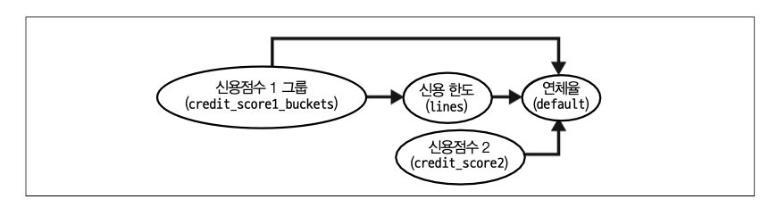
\(credit\_score2\)를 포함하면 \(credit\_limit\)의 표준오차가 감소했다.
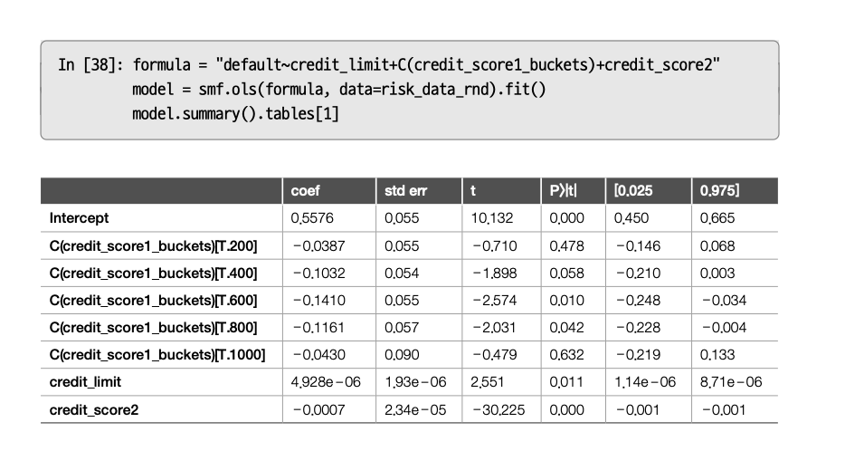
선형회귀분석은 교란 요인을 보정하는 데 사용할 수 있을 뿐만 아니라 잡음을 줄이는 데도 사용할 수 있다.
잡음 유발 통제변수
신용 한도가 위험도가 아닌 소비에 미치는 영향을 추정하려고 한다. 이전 예제에서처럼 \(credit\_score1\)이 주어졌을 때 신용 한도는 무작위로 배정되었다. 하지만 이번에는 \(credit\_score1\)이 교란 요인이 아니라고 가정해보자. 이 데이터 생성 과정의 인과 그래프는 다음과 같다.
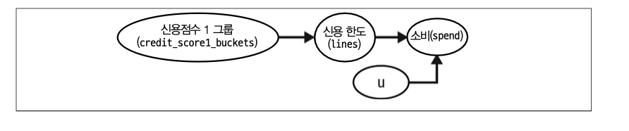
단순회귀모형을 사용했으며, 제곱근 함수를 적용하였다.
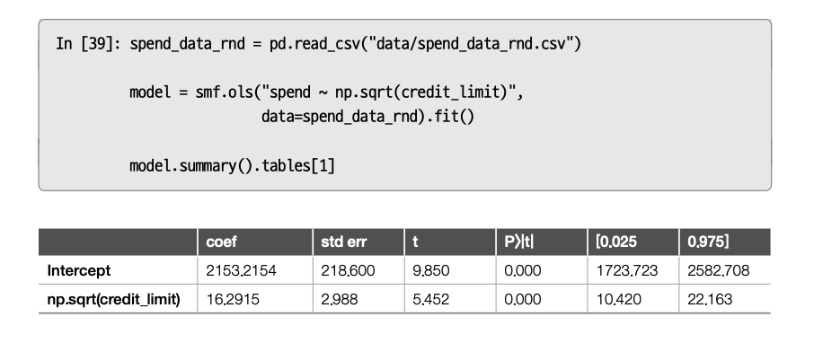
하지만 \(credit\_score1\_buckets\)를 포함하면 어떻게 될까?
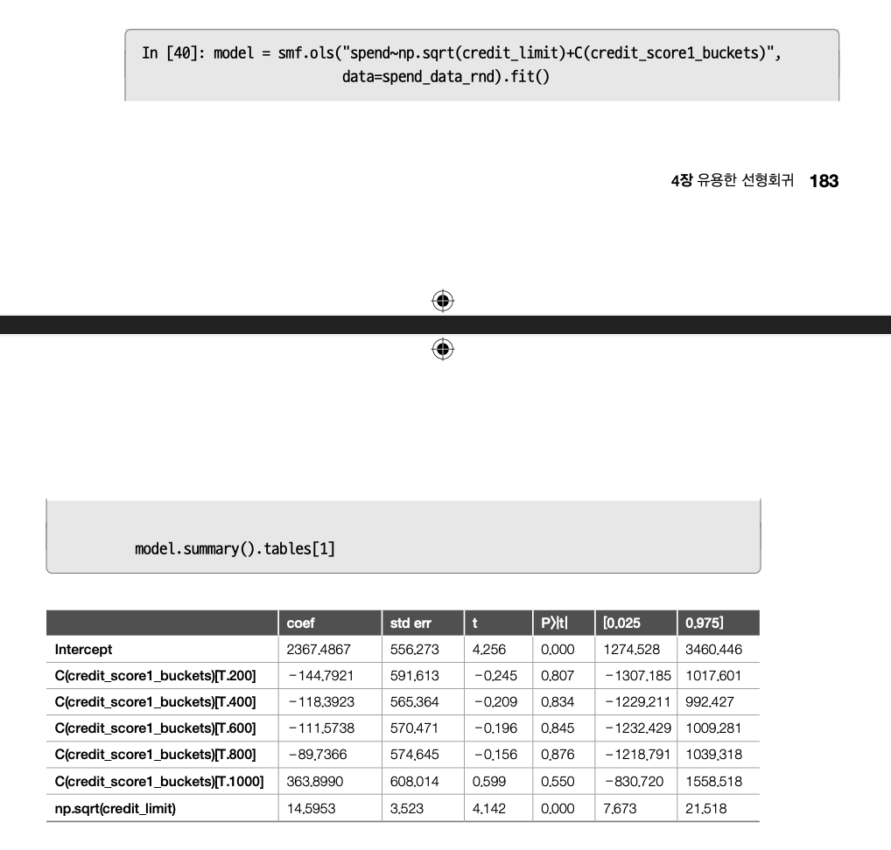
표준오차가 증가하여 인과 매개변수의 신뢰구간이 넓어졌다.
교란 요인 중 하나가 처치의 강력한 예측자이고 결과의 약한 예측자임을 알면, 모델에서 제외할 수 있다. 이렇게 할 때, 추정값이 편향될 수 있으나 분산을 크게 줄인다면 가치가 있는 선택일 수 있다. 이를 편향-분산 트레이드오프라고 한다.
우선순위 통제변수
교란 변수
outcome을 설명하는 변수>>처치를 설명하는 변수
처치를 설명하는 변수>>outcome을 설명하는 변수